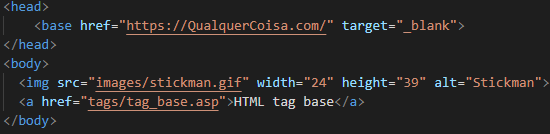

Os links HTML são definidos com a tag a
O destino do link é especificado no atributo href.
A tag base é usada para especificar um URI base, ou URL, para links relativos.
Por exemplo, podes definir o URL base uma vez no topo da página na seção de cabeçalho, então todos os links relativos subsequentes usarão esse URL como ponto de partida.
A tag img é usada para incorporar uma imagem em uma página HTML.
As imagens não são tecnicamente inseridas em uma página da web; as imagens estão vinculadas a páginas da web. A tag img cria um espaço de retenção para a imagem referenciada,
tendo com ela dois atributos.
Scr - Especifica o caminho para a imagem
Alt - Especifica um texto alternativo para a imagem, se a imagem por algum motivo não puder ser exibida